Let us take an example and build up the intuition from here to solve this problem using binary search.
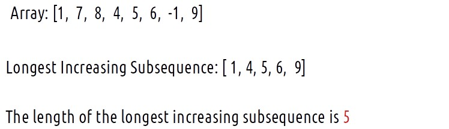
Now let us loop through every element and try to form a new subsequence.
(i) index = 0, arr[i] is 1.
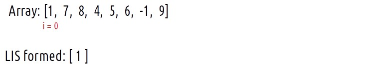
We can start forming the LIS from this index. Currently the LIS formed will be [1].
(ii) index = 1, arr[i] is 7.
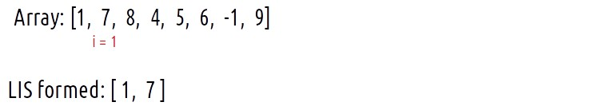
As 7 is greater than the last element of the LIS, i.e 0; we can push it to the LIS array.
(iii) index = 2, arr[i] is 8.
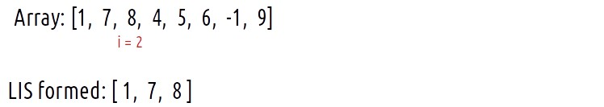
As 8 is greater than the last element of the LIS, i.e 7; we can push it to the LIS array.
(iv) index = 3, arr[i] is 4.
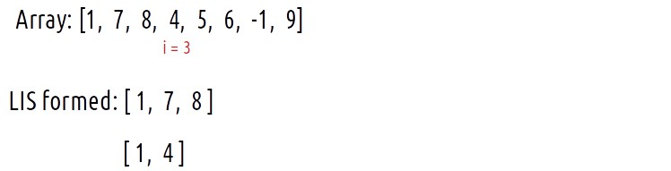
Now, 4 is less than 8, the last element of the LIS array, therefore we can’t push it like before. Rather we can make a second LIS array as shown in the figure above for the time being.
(v) index = 4, arr[i] is 5.
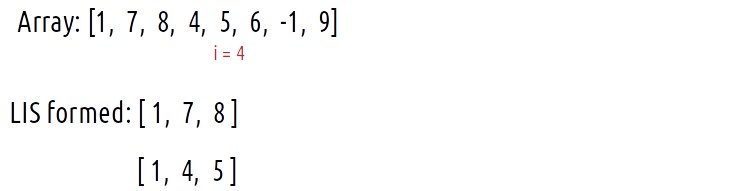
5 is not greater than 8, but it is greater than 4, the last element of the second LIS array that we made so we push it there.
(vi) index = 5, arr[i] is 6
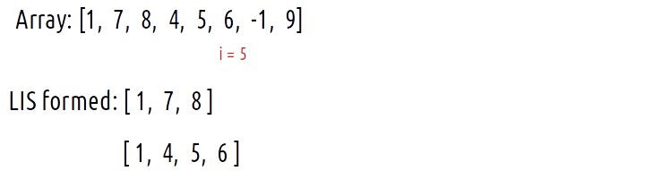
6 is not greater than 8, but it is greater than 5, the last element of the second LIS array that we made so we push it there.
(vii) index = 6, arr[i] is -1
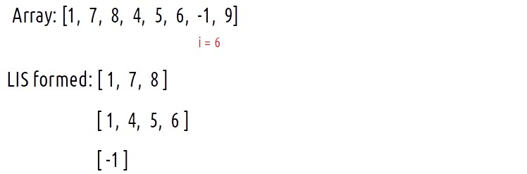
-1 is smaller than all the elements of both arrays, therefore we can’t push it anywhere in the first two LIS arrays. Therefore, we make a separate LIS array as shown in the figure.
(viii) index = 7, arr[i] is 9
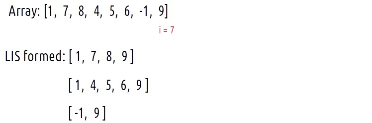
9 is greater than the last elements of all three LIS arrays, therefore we can push it to the last of all three.
Now, we can return the length of the longest LIS array among the three, [1, 4, 5, 6, 9] i.e 5 as the final answer.
This is the basic intuition of the algorithm. If we make a new LIS array at every junction, it will take up a lot of space. Now the question arises, do we need to store all these extra LIS arrays in a data structure to keep track of all the LIS formed as we traverse the array?
The answer is No, We can maintain a single array (say temp) and rewrite this temp array again in order to find the length of the LIS. We are concerned about the length of the LIS rather than the LIS itself.
Intuition for rewriting the temp array
Now we will revisit this example again and find out how we can maintain a single array (temp) that gives us the length of the LIS.
We can straight away to index = 3, where we originally made the second LIS array.
Now, instead of creating a second LIS array, we will try to place it in the first LIS array (renamed as a temp). As temp is an increasing subsequence, 4 will come in place of 7 in the temp array as shown below.
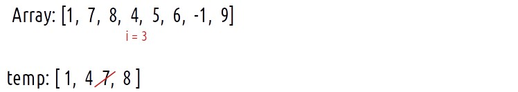
Now, let us dig in to answer these three basic question that arises from this step:
What is the purpose of replacing 7 with 4?
The purpose is to maintain a single array that can be used to calculate the length of LIS.
Will this not affect the answer already calculated?
The answer is no. Before this replacement, the length of the LIS was 3. We know that already. By this replacement of 7 with 4, we are not changing the length of the temp array. Suppose a number 9 comes later we will simply append it to temp and its length will increase. In no way is this replacement affecting the length of the temp array from which we deduce the answer. Readers are highly advised to take some random examples and try to implement this step and understand how this step is not affecting the answer.
What is this temp array?
The ‘temp’ array is not the LIS. It is a simple array we maintain to figure out the length of the LIS of the given array. It will always have one property that the elements that are present inside it will always be sorted.
It is due to all these factors discussed above that instead of creating two separate arrays to store subsequences, we can maintain a single array (temp) and overwrite it again and again.
Next, we have i = 4, arr[i] = 5 which will also be replaced in a similar way.
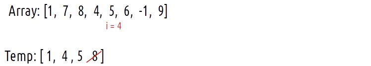
Next we have i=5, arr[i] = 6. As 6 is greater than the last element of the temp array, i.e 5, we append it to the temp array.
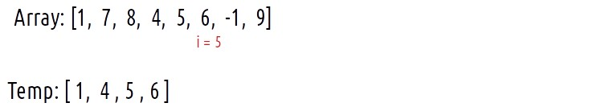
Next, we have i = 6, arr[i] = -1. We replace it with 1 in the array.
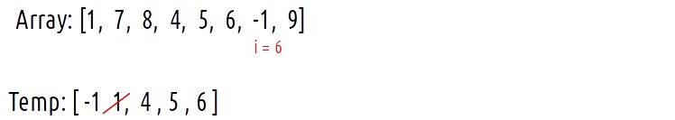
Next, we have i = 7, arr[i] = 9. We simply append it to the temp array.
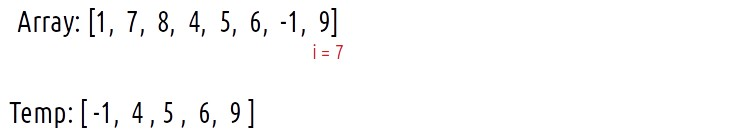
Now, we see that the final temp array is not the LIS, but its length is giving us the answer (i.e the length of LIS of the original array).
Now, the main part left is to find the index at which we need to do the replacement. If we have to insert an element X in the temp array, the following properties should be satisfied:
The elements smaller than X should be present on the left side of X after replacement.
The elements greater than or equal to X should be on the right side after replacement.
Now as we are inserting in this particular manner, the array will always be sorted. Therefore we can search for the index by using binary search. In C++ the lower_bound function can be used to give us the particular index.
The lower bound function(X) returns us the iterator (or in simple terms the index) of :
The element X itself, if it is present.
Or the next largest element, if the element is not present.
Approach:
Now, as we have understood the entire intuition of the algorithm we will summarize the approach:
Initialize a temp array.
Push the first element of the array to temp.
Iterate over the next elements.
In every iteration, if arr[i] is greater than the last element of the temp array simply push it to the temp array.
Else, just find the lower_bound index of that element in the temp array (say ind). THen simply initialize temp[ind] = arr[i] (// replacement step).
Maintain a len variable to calculate the length of the temp array in the iteration itself.
Code:
#include <bits/stdc++.h>
using namespace std;
// Function to find the length of the longest increasing subsequence
int longestIncreasingSubsequence(int arr[], int n) {
// Create a temporary vector to store the increasing subsequence
vector<int> temp;
temp.push_back(arr[0]);
int len = 1;
for (int i = 1; i < n; i++) {
if (arr[i] > temp.back()) {
// If arr[i] is greater than the last element of temp, extend the subsequence
temp.push_back(arr[i]);
len++;
} else {
// If arr[i] is not greater, replace the element in temp with arr[i]
int ind = lower_bound(temp.begin(), temp.end(), arr[i]) - temp.begin();
temp[ind] = arr[i];
}
}
return len;
}
int main() {
int arr[] = {10, 9, 2, 5, 3, 7, 101, 18};
int n = sizeof(arr) / sizeof(arr[0]);
cout << "The length of the longest increasing subsequence is " << longestIncreasingSubsequence(arr, n);
return 0;
}
Output:
The length of the longest increasing subsequence is 4
Time Complexity: O(N*logN)
Reason: We iterate over the array of size N and in every iteration, we perform a binary search which takes logN time.
Space Complexity: O(N)
Reason: We are using an extra array of size N to store the temp variable.
import java.util.*;
class LIS {
// Function to find the length of the longest increasing subsequence
static int longestIncreasingSubsequence(int[] arr, int n) {
List<Integer> temp = new ArrayList<>();
temp.add(arr[0]);
int len = 1;
for (int i = 1; i < n; i++) {
if (arr[i] > temp.get(temp.size() - 1)) {
// arr[i] > the last element of temp array
temp.add(arr[i]);
len++;
} else {
// Replacement step
int ind = Collections.binarySearch(temp, arr[i]);
if (ind < 0) {
ind = -ind - 1;
}
temp.set(ind, arr[i]);
}
}
return len;
}
public static void main(String[] args) {
int[] arr = {10, 9, 2, 5, 3, 7, 101, 18};
int n = arr.length;
System.out.println("The length of the longest increasing subsequence is " +
longestIncreasingSubsequence(arr, n));
}
}
Output:
The length of the longest increasing subsequence is 4
Time Complexity: O(N*logN)
Reason: We iterate over the array of size N and in every iteration, we perform a binary search which takes logN time.
Space Complexity: O(N)
Reason: We are using an extra array of size N to store the temp variable.
def longest_increasing_subsequence_length(arr):
n = len(arr)
# Initialize a temporary list to store the increasing subsequence
temp = [arr[0]]
length = 1
for i in range(1, n):
if arr[i] > temp[-1]:
# If arr[i] is greater than the last element of temp, extend the subsequence
temp.append(arr[i])
length += 1
else:
# Use binary search to find the position to replace the element in temp
ind = bisect_left(temp, arr[i])
temp[ind] = arr[i]
return length
if __name__ == "__main__":
arr = [10, 9, 2, 5, 3, 7, 101, 18]
result = longest_increasing_subsequence_length(arr)
print("The length of the longest increasing subsequence is", result)
Output:
The length of the longest increasing subsequence is 4
Time Complexity: O(N*logN)
Reason: We iterate over the array of size N and in every iteration, we perform a binary search which takes logN time.
Space Complexity: O(N)
Reason: We are using an extra array of size N to store the temp variable.
[tabby title="JavaScript Code"]
function longestIncreasingSubsequence(arr) {
const n = arr.length;
// Create an empty array 'temp' to store the increasing subsequence
const temp = [arr[0]];
// Initialize the length of the longest increasing subsequence
let len = 1;
// Iterate through the input array starting from the second element
for (let i = 1; i < n; i++) {
if (arr[i] > temp[temp.length - 1]) {
// If arr[i] is greater than the last element of 'temp', it extends the subsequence
temp.push(arr[i]);
len++;
} else {
// If not, we find the index where arr[i] can replace an element in 'temp'
const ind = temp.findIndex((el) => el >= arr[i]);
temp[ind] = arr[i];
}
}
// 'len' now represents the length of the longest increasing subsequence
return len;
}
// Main function
function main() {
const arr = [10, 9, 2, 5, 3, 7, 101, 18];
const result = longestIncreasingSubsequence(arr);
console.log("The length of the longest increasing subsequence is", result);
}
// Call the main function
main();
Output:
The length of the longest increasing subsequence is 4
Time Complexity: O(N*logN)
Reason: We iterate over the array of size N and in every iteration, we perform a binary search which takes logN time.
Space Complexity: O(N)
Reason: We are using an extra array of size N to store the temp variable.
Special thanks to Anshuman Sharma for contributing to this article on takeUforward. If you also wish to share your knowledge with the takeUforward fam, please check out this article. If you want to suggest any improvement/correction in this article please mail us at write4tuf@gmail.com